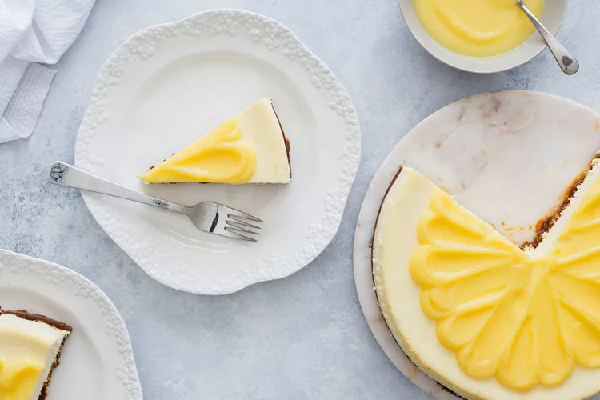

Lemon Cheesecake

| Ingredient |
Amount |
| Graham cracker crumbs |
2 cups |
| butter, melted |
6 tablespoons |
| sugar |
1/4 cup |
| cream cheese, softened |
4 packages |
| heavy whipping cream |
1/2 cup |
| lemon juice |
1/4 cup |
| large eggs |
5 |
Directions
- Preheat oven to 325°. In a small bowl, combine cracker crumbs, butter and sugar. Press onto bottom and 1 to 2 in. up the inside of a greased 10-in. springform pan. Place pan on a baking sheet. Bake 10 minutes. Cool on a wire rack.
- In a large bowl, beat cream cheese and sugar until smooth. Beat in cream, lemon juice, flour, lemon zest, extracts and, if desired, food coloring. Add eggs; beat on low speed just until combined. Pour into crust. Return pan to baking sheet.
- Bake 55-65 minutes or until center is almost set. Cool on a wire rack 10 minutes. Carefully run a knife around edge of pan to loosen; cool 1 hour. Refrigerate overnight. Remove side of pan.
Original Recipe